-
Checking the Inventory Maintenance functionality
16:51:27 PM / 04:03:382 Fail
Checking the Inventory Maintenance functionality
03.25.2022 16:51:27 03.25.2022 17:25:31 04:03:382 · #test-id=1FailCheck the accounting entries GLGiven Maker Navigate to UAT URL loginstepdefinitions.HooksClass.addScreenshot(io.cucumber.java.Scenario)screenshot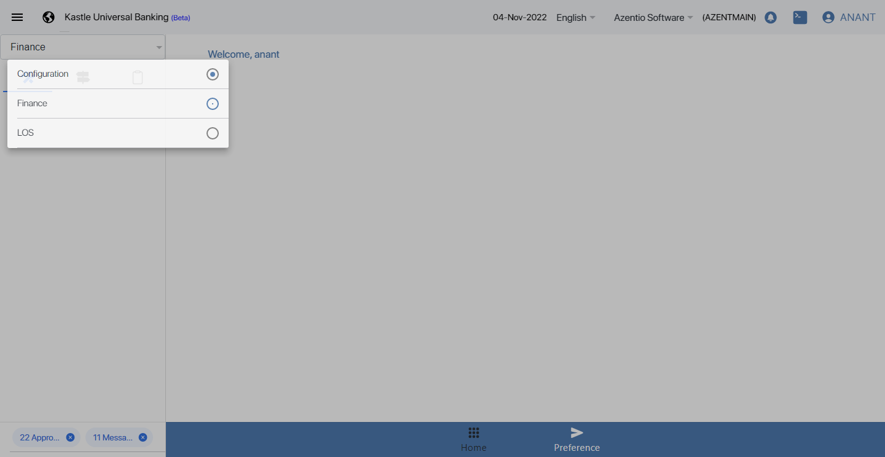Then Click on Direction Leftstepdefinitions.HooksClass.addScreenshot(io.cucumber.java.Scenario)screenshot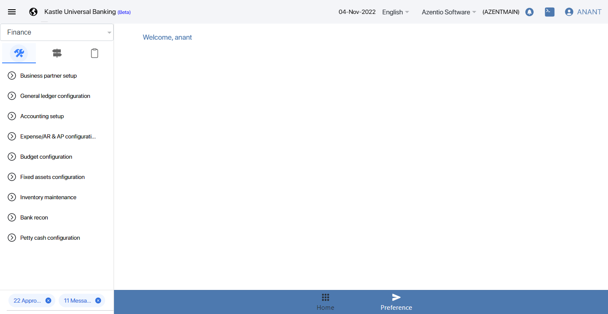Then Click on Inventory Maintenancestepdefinitions.HooksClass.addScreenshot(io.cucumber.java.Scenario)screenshotThen Click on Inventory Gl Configuration Eye Iconstepdefinitions.HooksClass.addScreenshot(io.cucumber.java.Scenario)screenshot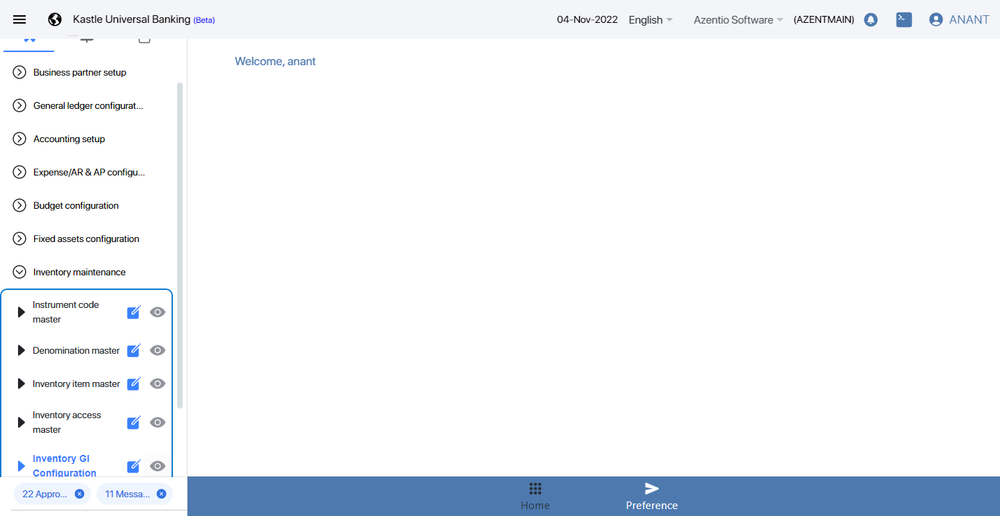Then Click on Inventory Maintenance Add buttonstepdefinitions.HooksClass.addScreenshot(io.cucumber.java.Scenario)screenshot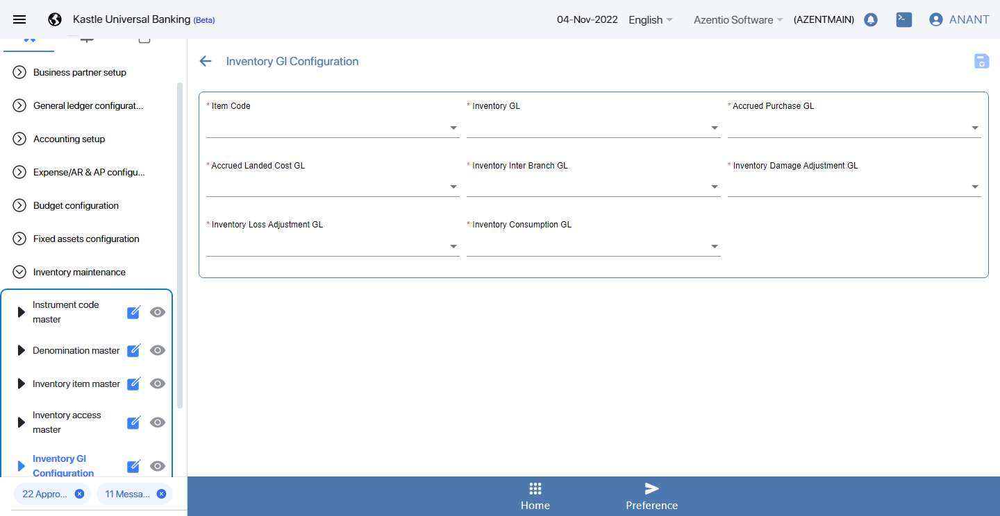Then Fill Inventory Gl Configuration Mandatory fieldsstepdefinitions.HooksClass.addScreenshot(io.cucumber.java.Scenario)screenshot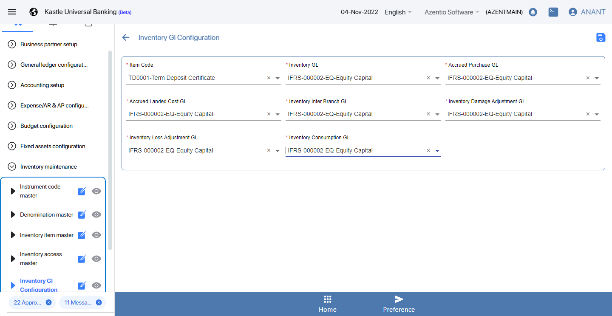Then Click on Inventory Item Save buttonstepdefinitions.HooksClass.addScreenshot(io.cucumber.java.Scenario)screenshot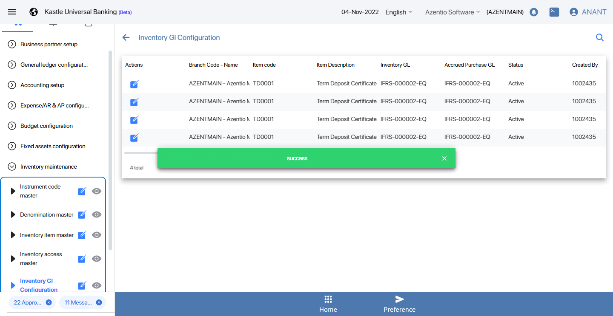Then Click on Inventory Item Notificationstepdefinitions.HooksClass.addScreenshot(io.cucumber.java.Scenario)screenshot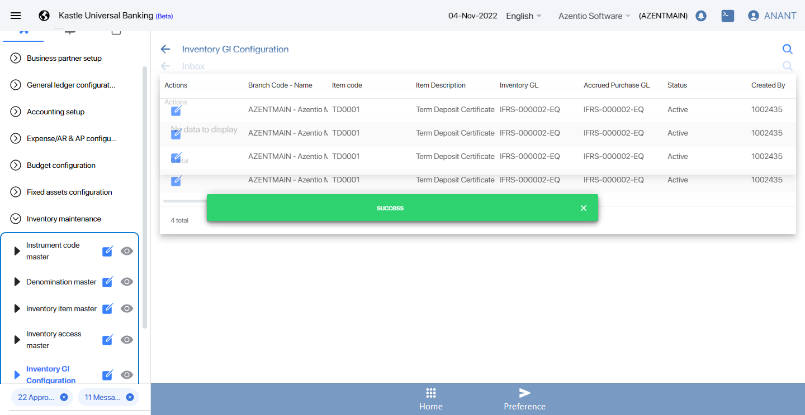And Select Inventory Maintenance and Submit the recordstepdefinitions.HooksClass.addScreenshot(io.cucumber.java.Scenario)Then log in to the reviewer accountStep skippedThen click on the Notification select the record and ApproveStep skippedThen log in to the Checker AccountStep skippedAnd then checker claim the recordStep skippedThen click on the checker NotificationStep skippedAnd select the record and Approve by checkerStep skippedstepdefinitions.HooksClass.TearDown(io.cucumber.java.Scenario) -
Check the Functionality of Inventory
17:25:34 PM / 30:51:358 Pass
Check the Functionality of Inventory
03.25.2022 17:25:34 03.25.2022 17:26:25 30:51:358 · #test-id=36PassCheck the accounting entriesGiven Navigate to URL and user should login as a makerstepdefinitions.HooksClass.addScreenshot(io.cucumber.java.Scenario)screenshot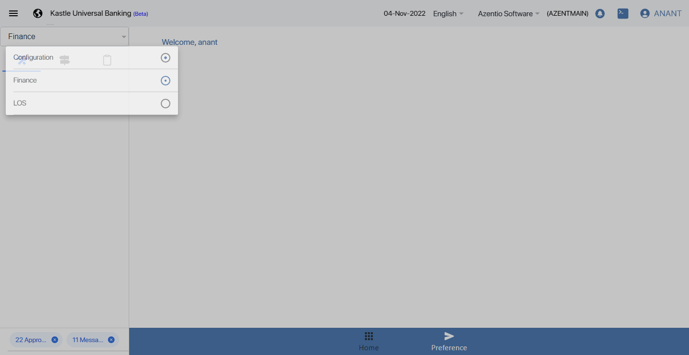Then click on report segment buttonstepdefinitions.HooksClass.addScreenshot(io.cucumber.java.Scenario)screenshot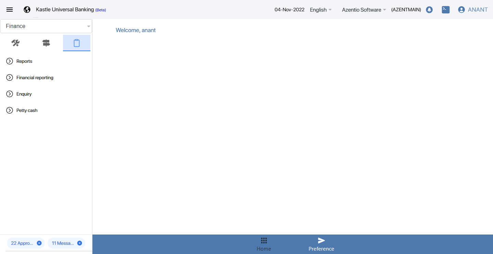And click on equiry menustepdefinitions.HooksClass.addScreenshot(io.cucumber.java.Scenario)screenshot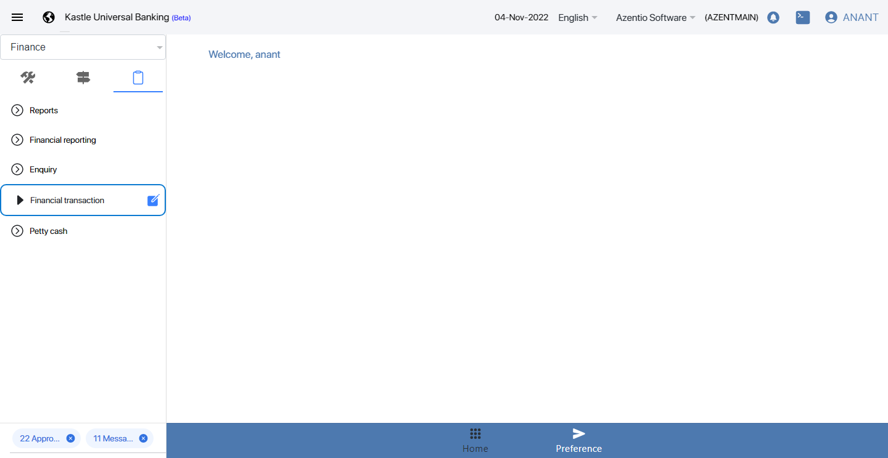Then click on edit icon near fiancial transaction menustepdefinitions.HooksClass.addScreenshot(io.cucumber.java.Scenario)screenshot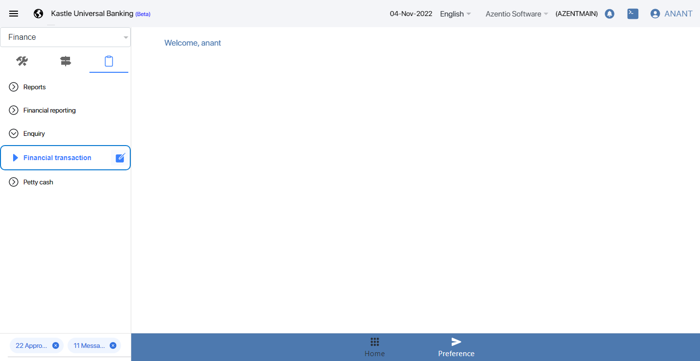And choose the branch codestepdefinitions.HooksClass.addScreenshot(io.cucumber.java.Scenario)screenshotAnd choose the Gl codestepdefinitions.HooksClass.addScreenshot(io.cucumber.java.Scenario)screenshotAnd click transaction from date calender iconstepdefinitions.HooksClass.addScreenshot(io.cucumber.java.Scenario)screenshot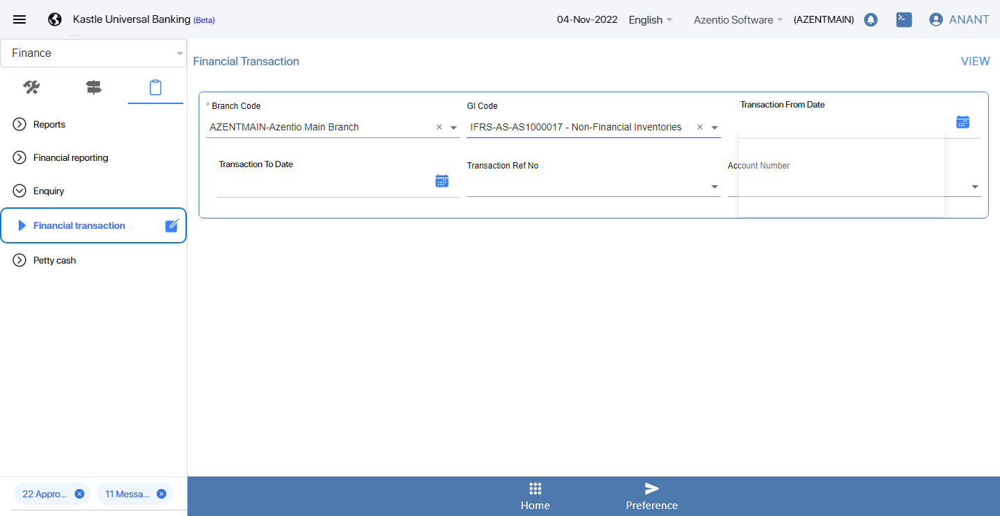Then choose from datestepdefinitions.HooksClass.addScreenshot(io.cucumber.java.Scenario)screenshot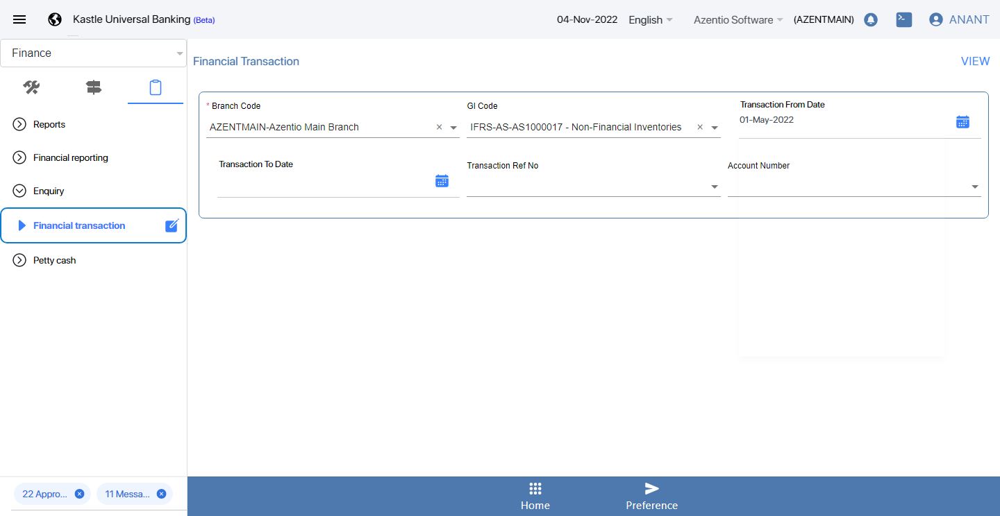And click on transaction to date calender iconstepdefinitions.HooksClass.addScreenshot(io.cucumber.java.Scenario)screenshotThen choose to datestepdefinitions.HooksClass.addScreenshot(io.cucumber.java.Scenario)screenshotAnd click on view buttonstepdefinitions.HooksClass.addScreenshot(io.cucumber.java.Scenario)screenshot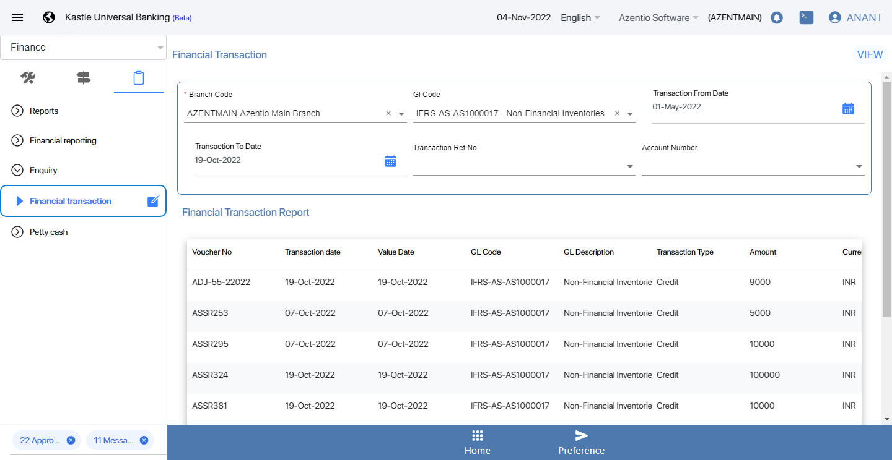
Started
Mar 25, 2022 04:51:26 PM
Ended
Mar 25, 2022 05:26:25 PM
Features Passed
1
Features Failed
1
Features
Scenarios
Steps
Timeline
Tags
| Name | Passed | Failed | Skipped | Others | Passed % |
|---|---|---|---|---|---|
| @KUBS_INV_MGMT_UAT_001_006 | 1 | 1 | 0 | 0 | 50% |
System/Environment
| Name | Value |
|---|---|
| version | 10 |
| os | windows |
-
@KUBS_INV_MGMT_UAT_001_006
2 tests
@KUBS_INV_MGMT_UAT_001_006
1 passed 1 failedStatus Timestamp TestName Fail 16:51:27 PM Check the accounting entries GL Checking the Inventory Maintenance functionality.Check the accounting entries GLPass 17:25:34 PM Check the accounting entries Check the Functionality of Inventory.Check the accounting entries
-
org.openqa.selenium.NoSuchWindowException
1 tests
org.openqa.selenium.NoSuchWindowException
1 failedStatus Timestamp TestName Fail 17:25:26 PM stepdefinitions.HooksClass.addScreenshot(io.cucumber.java.Scenario) Checking the Inventory Maintenance functionality.Check the accounting entries GL.stepdefinitions.HooksClass.addScreenshot(io.cucumber.java.Scenario) -
org.openqa.selenium.WebDriverException
1 tests
org.openqa.selenium.WebDriverException
1 failedStatus Timestamp TestName Fail 17:25:26 PM stepdefinitions.HooksClass.TearDown(io.cucumber.java.Scenario) Checking the Inventory Maintenance functionality.Check the accounting entries GL.stepdefinitions.HooksClass.TearDown(io.cucumber.java.Scenario) -
org.openqa.selenium.TimeoutException
1 tests
org.openqa.selenium.TimeoutException
1 failedStatus Timestamp TestName Fail 16:52:00 PM And Select Inventory Maintenance and Submit the record Checking the Inventory Maintenance functionality.Check the accounting entries GL.And Select Inventory Maintenance and Submit the record